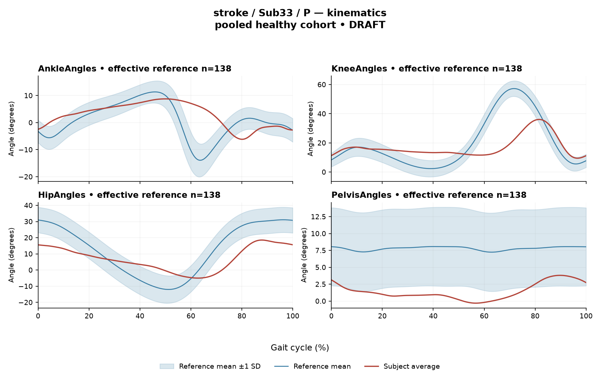

R30EFCF9DDFCA7E02
rater2 / 23 of 150 / Case stroke_Sub33_P / Review row 24
Report: verbatim text
Text file for exact quotations# Research Gait-Report Interpretation — Sub33_P **Candidate interpretation version:** limited-evidence-v3.1-candidate **Scope:** Limited-evidence interpretation of a supplied quantitative summary. This is not a diagnosis, not a severity grading, and not a basis for treatment selection. --- ## 1. Objective Findings **Participant and side.** Sub33_P belongs to the stroke group; the analysed limb is the **paretic** side. The released cycle for this limb runs from initial contact of the paretic limb at 0% to the next initial contact of the same limb at 100%. These endpoints are successive occurrences of the same event, not a single instant. No intermediate gait event — including toe-off — is supplied, so all timing below is expressed purely as a percentage of the analysis cycle. **Spatiotemporal values as supplied.** | Measure | Value | |---|---| | Gait speed | 0.22 m/s | | Speed band label | household ambulator (<0.4 m/s) | | Cadence | 62.7 steps/min | | Step length symmetry index | 8.6% (successive-footfall definition) | The ambulation label denotes a speed band only. It does not measure walking independence, safety, assistive-device use, or real-world community mobility, and none of those were supplied. The symmetry index is **positive (+8.6%)**, which under the stated convention — 200×(paretic − non-paretic)/(paretic + non-paretic) — means the **paretic step was the longer of the two** in this recording. This value was computed with the successive-footfall definition (each heel at its own initial contact); the instantaneous definition can yield a different number for some subjects, so the value is definition-dependent and should not be compared with symmetry indices computed the other way. **Critical comparability limit (applies to every reference comparison in this report).** The healthy reference cohort's self-selected speeds span 0.80–1.79 m/s. At **0.22 m/s** this participant walks well below that floor, so **no speed-matched healthy reference exists in this dataset**. Every deviation reported in Sections 2 and 3 therefore conflates slow-walking effects with stroke-related control changes, and these two contributions **cannot be separated from these data**. The reference cohort is also pooled across both body sides and all ages and is not age-matched here. Accordingly, the comparisons below describe *differences from an empirical reference distribution*; they do not establish a disease effect, a clinical diagnosis, a mechanism, or a severity level. **Available vs. not supplied.** Supplied: sagittal kinematics for ankle, knee, hip and pelvis with per-joint Gait Variable Scores and a composite GPS-like score; averaged EMG envelopes with detected intervals and max |z| statistics for seven muscles (GAS, RF, VL, BF, ST, TA, ERS); two co-contraction indices. Not supplied in this input: individual toe-off and other event timings, matched muscle-specific normal timing references, stride-level variability, raw-signal quality checks, expert plots, coronal and transverse plane kinematics, age, sex, time post-stroke, clinical stroke scores, and non-paretic-side data. Items absent from this input must not be described as absent from the source release — some may exist there. No channel is documented here as a failed or absent recording; the muscles listed all returned analysable averaged envelopes. --- ## 2. EMG Envelope and Threshold Findings **What these numbers are.** All EMG values derive from **ensemble-averaged envelopes**. For each participant, side and muscle, normalization used a shared maximum across available strides before averaging (participant-, side- and muscle-specific denominator; not shared between sides); individual strides were not rescaled to their own peaks. Amplitudes are therefore **relative envelope values** — not neural activation, force or strength — and muscles must not be ranked as stronger or weaker from them. An averaged curve cannot demonstrate stride-to-stride variability, and the pattern described here must not be assumed to hold in every individual stride. Intervals are regions where the averaged envelope exceeds **20% of that same curve's own peak**, with a minimum retained duration of 3% of the cycle. These are properties of the averaged envelope under that threshold-and-duration rule — **not** physiological onset, offset, contraction duration, or inactivity outside the intervals. A notation such as (X%–Y%) with X > Y wraps the 100%→0% boundary, i.e. the mean envelope remained above threshold across the cycle-defining initial-contact boundary. **Detected intervals and coverage (mean-envelope level).** | Muscle | Retained interval(s) | Coverage | Boundary continuity | Peak norm. amplitude | Max abs. z (location) | |---|---|---|---|---|---| | GAS | 0%–100% | 100% | continuous across boundary | 0.46 | 13.7 above reference @ 57% | | RF | 87%–57% (wraps) | 73% | continuous across boundary | 0.48 | 4.5 above reference @ 39% | | VL | 87%–58% (wraps) | 73% | continuous across boundary | 0.54 | 6.1 above reference @ 33% | | BF | 0%–100% | 100% | continuous across boundary | 0.39 | 5.1 above reference @ 58% | | ST | 46%–77%; 91%–36% (wraps) | 77% | continuous across boundary | 0.50 | 6.3 above reference @ 60% | | TA | 72%–58% (wraps) | 87% | continuous across boundary | 0.33 | 4.6 above reference @ 37% | | ERS | 22%–20% (wraps) | 98% | continuous across boundary | 0.51 | 4.8 above reference @ 72% | **Reading of the interval pattern.** Every recorded muscle shows a mean envelope that stays above its own 20%-of-peak threshold across the cycle boundary, and coverage values are high throughout (73% to 100%). For GAS and BF the reported coverage is the full cycle, meaning the averaged envelope did not drop below its own relative threshold at any sampled phase; for ERS coverage is 98%, with a single retained above-threshold span written as 22%–20%. For RF, VL, TA and ST the detected spans leave gaps in the averaged curve (RF and VL around the upper-50s to 87% region; TA between 58% and 72%; ST between 36%–46% and 77%–91%). These gaps are regions where the *mean envelope* fell below 20% of its own peak; they do not establish electrical silence, muscle inactivity, or absence of activity in individual strides. Conversely, for the full-coverage channels, the available evidence describes the averaged envelope only — I am not asserting anything about below-threshold segments in any individual stride. ST is the only muscle with more than one retained interval, so its averaged envelope shows two separated above-threshold regions rather than one continuous span. A 0% onset (GAS, BF) is the analysis-window boundary and not a physiological onset. **On timing.** Because no toe-off, no other intermediate event, and no matched muscle-specific normal timing reference are supplied here, none of these percentages can be assigned to stance or swing, to loading response, mid-stance or pre-swing, or to any functional role such as weight acceptance, push-off or limb clearance; nor may a conventional 60% stance/swing split be substituted. The only boundary that can be named is the initial-contact boundary at 0%/100%. For the same reason, **no interval can be characterized as normal, early, delayed, shortened or prolonged.** Anatomical actions may be named descriptively (GAS as a plantarflexor, TA as a dorsiflexor, RF/VL as knee extensors, BF/ST as hamstrings, ERS as an erector spinae channel), but naming an action is not the same as assigning it a phase-specific function in this cycle. **Amplitude.** Peak normalized amplitudes range from 0.33 (TA) to 0.54 (VL). Because each curve is scaled to its own participant-/side-/muscle-specific maximum, these values are internally referenced and cannot be compared across muscles as relative strength or effort, nor compared to the contralateral side (which is not supplied and would use a different denominator). **Max |z| statistics.** Each max |z| is an **extreme-value statistic** — the largest standardized difference from the phase-specific healthy mean/SD across all 1001 phase points — not a single-observation z-score. The conventional 2-SD rule does not apply: in this dataset all 109 healthy controls exceed |z| = 2 on at least one muscle, and per-muscle healthy 95th percentiles for this statistic run from 3.65 (ERS) to 4.61 (TA), higher still under leave-one-out. Against those percentile figures, RF (4.5) and TA (4.6) sit near or just below their applicable per-muscle healthy 95th-percentile values, while VL (6.1), BF (5.1), ST (6.3), ERS (4.8) and especially **GAS (13.7)** are larger; the GAS value is conspicuously the largest of the set. The location of each maximum (e.g. 57% for GAS, 33% for VL) marks the **largest standardized difference** from the reference, which is not necessarily where that envelope peaks and does not identify a gait event. "Above reference" means above the phase-specific reference **mean** at that location, not above a healthy percentile limit. Note also that these pooled percentiles are calibration values from the cohort background; they are not matched leave-one-out normal limits for this subject, and with a 0.22 m/s walking speed no speed-matched comparison exists at all. These values therefore quantify difference from an empirical reference, not pathology. **Co-contraction indices.** | Pair | CCI | Healthy reference (this dataset) | |---|---|---| | TA vs GAS | 0.78 | median 0.39 (2.5th–97.5th pct 0.24–0.59) | | RF vs BF | 0.65 | median 0.68 (2.5th–97.5th pct 0.48–0.83) | CCI here is the Falconer–Winter index computed on the **full continuous normalized envelopes** over the whole cycle (2 × common area / summed areas). It is a whole-cycle overlap index of envelope shape — **not** an amount of simultaneous activation time, not muscular force, and not a phase-specific result. Because it uses the continuous curves, it can be non-zero even when detected burst intervals do not overlap, since sub-threshold activity contributes. Descriptively: the **TA-vs-GAS value of 0.78 lies above the supplied healthy 97.5th percentile of 0.59** and is well above the median of 0.39. The **RF-vs-BF value of 0.65 lies within the supplied 0.48–0.83 interval**, slightly below its median of 0.68. Neither statement carries a clinical verdict: lying within the interval does not establish physiologically normal co-activation or normal muscle function, and lying outside it does not establish pathological co-activation, spasticity, stiffness, impaired motor control, or any diagnosis. Both values depend on the specific normalization and envelope pipeline used here and must not be compared with CCI values or thresholds from other studies or algorithms. The absence of a speed-matched reference applies to these indices as well. --- ## 3. Kinematic and Reference Comparisons All joint values below are **sagittal plane only**; coronal and transverse data are not part of this input, so no statement about frontal- or transverse-plane mechanics is possible. | Channel (sagittal) | ROM (deg) | Gait Variable Score | |---|---|---| | Ankle | 14.9 | 6.91 | | Knee | 26.6 | 14.96 | | Hip | 23.5 | 11.51 | | Pelvis | 4.1 | 6.48 | **Composite kinematic deviation score (GPS-like): 10.56.** This is the RMS of the per-joint GVS values over the sagittal channels supplied — it is *not* the validated 9-variable Gait Profile Score, and the two should not be equated. The reference actually used for this subject is **138 pooled healthy subjects, 1001 phase points, from main_cohort_excel**. Against the supplied composite reference (median 5.1, 95th percentile 10.7), this subject's 10.56 is roughly double the median and sits **just below the 95th percentile**. Because 10.56 and 10.7 are close, and because the displayed precision does not reveal underlying unrounded values, this proximity should be reported as a descriptive position within the reference distribution and not converted into a category such as "within normal limits" or "abnormal." Among the individual channels, the **knee GVS (14.96)** is the largest, followed by **hip (11.51)**, with ankle (6.91) and pelvis (6.48) lower. A GVS and the composite score are **summary magnitudes of difference from the reference across the cycle**. Neither localizes the direction of the waveform difference (more flexion vs. more extension), nor the phase at which it occurs, nor its cause. No per-joint healthy reference intervals were supplied, so individual GVS values cannot be classified as inside or outside normal limits — only ranked relative to each other within this subject. **On ROM.** The sagittal ROM values are descriptive excursions of the averaged waveform. No matched reference ROM values were supplied, so **ROM alone does not establish a clinical restriction, contracture, or limitation** in any of these joints — including the small pelvic sagittal excursion of 4.1 deg, which cannot be labelled reduced without an appropriate comparison. **Overall comparability.** As stated in Section 1, the entire kinematic comparison inherits the same limitation as the EMG comparison: the reference is pooled across sides and ages, is not matched for this subject's characteristics, and contains no one walking as slowly as 0.22 m/s. The composite and per-joint deviations therefore quantify how far this recording sits from a mismatched empirical reference — a distance that mixes very-slow-walking mechanics with any stroke-related change — and cannot on their own demonstrate a disease effect or support a clinical diagnosis. The same caution would apply to a control participant compared against this reference. --- ## 4. Questions for Further Clinical Assessment These are open questions raised by the limits of the supplied data. None presupposes that the mechanism or measurement issue named has already been observed, and none implies a treatment recommendation. 1. **Event timing.** Are individual gait events (toe-off, opposite initial contact, single/double support boundaries) available in the source release for this participant? Obtaining them would allow the detected intervals to be positioned relative to actual phase boundaries rather than to cycle percentage alone. 2. **Speed-matched or slow-walking reference.** Is a reference cohort walking at comparable speed available, or could a speed-stratified comparison be constructed? Without one, the contributions of very slow walking and of stroke-related control changes to the reported deviations cannot be separated. 3. **GAS envelope.** The GAS max |z| of 13.7 is far larger than the other channels. Would review of the raw signal, electrode placement, and envelope processing for that channel help determine whether any measurement factor (e.g. cross-talk, electrode issue, or an artefact contributing to the shared normalization maximum) is present, as distinct from a genuine envelope-shape difference? 4. **Stride-level behaviour.** Are individual-stride envelopes and stride counts retrievable? The averaged curve cannot show whether the high coverage values and boundary continuity reflect a consistent pattern across strides or the averaging of variable strides. 5. **Full-coverage channels.** For GAS, BF and ERS, can the underlying unrounded coverage and the envelope minima be inspected to determine whether any below-threshold segment exists? The current rounded coverage figures do not settle that question. 6. **Symmetry definition.** Would the step length symmetry index computed with the instantaneous definition agree with the +8.6% successive-footfall value, and are the underlying per-side step lengths available for review? 7. **Non-sagittal and contralateral data.** Are coronal/transverse kinematics and non-paretic-side EMG and kinematics available in the release? Note that contralateral EMG amplitudes would use a side-specific denominator and would not be directly comparable in absolute terms. 8. **Participant context.** Are age, sex, time post-stroke, clinical stroke scores, assistive-device and orthosis use, and any documented recording-quality notes available? These were not supplied here and would materially affect how the above comparisons should be framed. --- *Interpretation limits: all EMG statements describe averaged-envelope properties under the stated 20%-of-own-peak threshold with a 3%-of-cycle minimum duration. CCI is a whole-cycle envelope-overlap index dependent on this normalization and envelope pipeline. Cycle percentages do not identify gait phases. Reference comparisons describe differences from an unmatched empirical distribution and do not establish normality, abnormality, disease effect, mechanism, or diagnosis. No treatment guidance is offered.*
Coverage rows
| Excel row | ID | Required content | Components |
|---|---|---|---|
| 130 | R109 | Describe walking speed 0.22 m/s and that it is below the stated 0.80 m/s reference floor; no reference at this speed is supplied. | AND: displayed speed and that it lies below the 0.80 m/s reference floor, so no speed-supported healthy reference exists in this dataset. Optional: cadence, speed-band label (not a functional claim). One sentence may also serve the comparability half of G03. |
| 131 | R110 | Identify knee AND hip as the principal sagittal GVS differences. Exact GVS values are optional; identify the findings as reference-relative sagittal summary differences. | AND: knee AND hip. Stating which joint is larger is optional; asserting the reverse order is an error. Exact GVS values are optional; no waveform direction, phase or restriction is required. |
| 132 | R111 | Describe GAS envelope above its phase-specific reference mean at approximately 57% of the analysis cycle (displayed max |z| 13.7). Within each route, muscle identity AND mean-relative direction AND approximate cycle location are required. Exact max-|z| repetition is optional. | Required for each route: muscle identity AND direction relative to the phase-specific reference mean AND approximate cycle location. Optional: exact max |z| value, comparison with the supplied endpoint span (descriptive only). Prohibited: percentile classification, gait phase, physiological onset, severity. |
| 133 | R112 | Describe EITHER ST envelope above its phase-specific reference mean at approximately 60% of the analysis cycle (displayed max |z| 6.3) OR VL envelope above its phase-specific reference mean at approximately 33% of the analysis cycle (displayed max |z| 6.1). One complete muscle-specific route is sufficient. Within each route, muscle identity AND mean-relative direction AND approximate cycle location are required. Exact max-|z| repetition is optional. | OR: one complete route suffices. Required for each route: muscle identity AND direction relative to the phase-specific reference mean AND approximate cycle location. Optional: exact max |z| value, comparison with the supplied endpoint span (descriptive only). Prohibited: percentile classification, gait phase, physiological onset, severity. |
| 134 | R114 | Describe the supplied successive-footfall step-length index 8.6% and its meaning: the paretic step is longer. | AND: displayed index and the direction supported by its sign. Optional: formula, definition wording. Acceptable phrasing for small displayed values: "a small difference with the paretic step slightly shorter/longer" (not a cutoff). Prohibited: restating the index as a percentage shortening (E01), severity grades, whole-gait symmetry generalization (E07 issue, not an omission). |
| 135 | G03 | Express a meaningful limitation of reference comparability AND why the comparison cannot establish disease effects or clinical diagnosis; for controls it cannot establish disease or overall normality. One statement may also support a case requirement. | AND: comparability and inference limitations |
Exact system input
Saved fileDraft a research gait-report interpretation for a physical therapist or physiatrist using only the supplied quantitative summary. This is a limited-evidence interpretation task, not diagnosis or treatment selection. Rules: - Describe the participant's actual group and side, available findings, and missing channels accurately. Healthy-group membership does not prove normal physiology; deviations from an empirical reference do not by themselves establish disease. - Treat detected EMG intervals and coverage as properties of an averaged envelope under the stated threshold and duration rule. Do not convert them into physiological onset, offset, duration, continuous contraction, or inactivity outside the intervals. You may describe reported coverage, retained intervals and boundary continuity at the mean-envelope level. Do not infer the same pattern in every individual stride. Say no below-threshold segment only when the supplied evidence establishes that; a rounded coverage value or no retained interval alone does not establish it. - Individual toe-off and matched muscle-specific timing references are not supplied in this task. Use percentages of the analysis cycle. When the input explicitly identifies an initial-contact boundary, you may name that boundary or describe numerical proximity to it. Do not assign stance/swing, loading response, pre-swing, mid-stance or another event to a percentage, or substitute a conventional 60% split. Anatomical muscle actions may be named, but do not map an interval to a gait-phase function such as clearance, push-off or weight acceptance. Do not characterize timing as normal, early, delayed or prolonged without the required evidence. - Respect the supplied normalization method. Relative envelope amplitude is not strength or force, and average curves do not establish stride-to-stride variability. - Report CCI as a whole-cycle overlap index of normalized EMG envelopes. You may compare it with the supplied empirical interval or a supplied median, including proximity to an endpoint. Do not invent an unavailable median. Being within that interval does not establish physiologically normal co-activation or normal muscle function; being outside it does not establish pathological co-activation, stiffness, impaired control or a diagnosis. CCI is not simultaneous activation time, muscular force or a phase-specific result. It depends on normalization and envelope methods; do not transfer values or thresholds from other studies or algorithms. - Describe GVS and GPS-like as summary differences from the stated reference. Neither localizes waveform direction or phase; ROM alone does not establish a clinical restriction without an appropriate comparison. Do not treat pooled calibration percentiles as matched leave-one-out normal limits. - Where using a reference comparison, convey both limited comparability and the inability to establish a disease effect or clinical diagnosis from that comparison. One clear explanation per report is enough; age and speed need not be recited as separate checklist words. A speed inside an overall range does not prove that an appropriate matched reference exists. Apply these limits to controls as well. - The location of maximum |z| is the largest standardized difference from the reference, not necessarily the time of peak envelope amplitude or a gait event. Above/below reference in an EMG row means relative to the phase-specific reference mean at that location, not relative to a healthy percentile limit. - Preserve numerical direction and the displayed precision. Do not invent values, clinical severity grades, statistical significance, or unavailable reference values. Descriptive comparisons with supplied values remain allowed. Near-boundary rounded values do not justify classifying hidden unrounded values. - Clinical follow-up questions may ask whether a mechanism or measurement issue exists; do not presuppose it has already been observed. Do not recommend treatment. If EMG is unavailable, section 2 may simply state that envelope timing, amplitude and CCI cannot be assessed. Reference-only plots do not provide patient EMG. Use exactly these four sections: 1. Objective Findings 2. EMG Envelope and Threshold Findings 3. Kinematic and Reference Comparisons 4. Questions for Further Clinical Assessment
Exact case input
Saved fileCandidate interpretation version: limited-evidence-v3.1-candidate
Draft the four-section report using only this subject's supplied evidence.
Metric definitions (read before interpreting any number below):
- All joint angles and ROM values are SAGITTAL PLANE only. Coronal/transverse data are not included.
- The released EMG curves are ensemble-averaged envelopes. For each participant and recorded muscle, normalization uses a shared maximum across the available strides before averaging; individual strides are not independently rescaled to their own peaks. This pipeline uses the released mean curves without further amplitude normalization. In the checked stroke release, the denominator is participant-, side-, and muscle-specific; it is not shared between sides. The local array audit verified 614 evaluable combinations, not all 700; 86 lacked valid nonzero paired samples. Amplitudes are relative envelope values, not absolute neural activation, force, or strength. Do not rank muscles as stronger or weaker from these amplitudes, or infer stride-to-stride variability from an average curve.
- Above-threshold intervals are the regions where the averaged envelope exceeds 20% of that curve's own peak, minimum retained interval 3% of the cycle (by sample count). An interval written as (X%-Y%) with X > Y wraps across the 100%->0% cycle boundary (envelope remains above threshold across the cycle-defining event). An onset of 0% is the analysis-window boundary, not necessarily a physiological onset. "No interval detected" means no region met the threshold + duration criteria; it does NOT mean the muscle is inactive or non-functional.
- CCI is the Falconer-Winter co-contraction index computed on the full continuous envelopes (2*common area / summed areas), so it can be non-zero even when the DETECTED burst intervals of the pair do not overlap (sub-threshold activity contributes).
- The composite kinematic deviation score is the RMS of the per-joint Gait Variable Scores over the sagittal channels provided ("GPS-like", not the validated 9-variable GPS).
- Step length symmetry index: 200*(paretic - non-paretic)/(paretic + non-paretic), in %. NEGATIVE means the paretic-side step is SHORTER. Two operational step-length definitions exist (successive-footfall: each heel's position at its own initial contact; instantaneous: both heels at the same instant) and give different values for some subjects -- the definition actually used is stated next to the symmetry value.
- "Max |z| deviation" is the LARGEST absolute z-score across all 1001 phase points of the cycle, comparing this curve to the healthy-cohort mean/SD at each phase. This is an extreme-value statistic, NOT a single-observation z-score: in this dataset every one of 109 healthy controls exceeds |z| = 2 on at least one muscle, and per-muscle healthy 95th percentiles for this statistic run 3.65 (ERS) to 4.61 (TA) -- higher still under leave-one-out. Do not label a value abnormal by the conventional 2-SD rule; use the healthy reference range given per muscle where provided.
- Healthy-cohort CCI reference (this dataset): RF-vs-BF median 0.68 (2.5th-97.5th pct 0.48-0.83); TA-vs-GAS median 0.39 (0.24-0.59). Composite score reference: median 5.1, 95th percentile 10.7.
- COHORT BACKGROUND (calibration context, not necessarily the exact reference used for this subject -- the actual reference composition is stated in a dedicated line with the subject data below): the full healthy cohort is 138 subjects for kinematics, effective n = 106-109 per muscle for EMG (29 controls have no usable EMG; completeness varies by age), pooling both body sides and all ages; it is not age- or speed-matched to this subject. A leave-one-out run uses one subject fewer than these counts.
- SPEED SUPPORT LIMIT (applies to most stroke subjects in this dataset): the healthy reference cohort's self-selected walking speeds span 0.80-1.79 m/s. If this subject's gait speed is below 0.80 m/s, NO speed-matched healthy reference exists in this dataset -- 41 of the 50 stroke subjects are below that floor. Deviations from the reference then conflate slow-walking effects with stroke-specific control changes, and the two cannot be separated from these data. Describe deviations from the reference as such; do not attribute them wholly to stroke pathology.
- Additional source fields are outside this input. Age, sex and gait events may be available in the release; time post-stroke, stroke clinical scores and a non-paretic-side designation apply only to the stroke cohort, as applicable. Do not claim every listed field exists for every participant. Distinguish not supplied, not applicable and documented absent recordings.
The released paretic-side cycle runs from initial contact of that limb at 0% to its next initial contact at 100%. The cycle boundary may be called initial contact; the endpoints are successive occurrences, not one instant. No intermediate event or phase boundary is supplied.
Model-visible information boundary: the summary contains mean-curve metrics and algorithm-detected intervals, not individual toe-off, matched normal muscle timing, stride-level variability, raw-signal quality checks, or expert plots. Information not supplied here must not be described as absent from the source dataset. Gait-cycle percentages alone do not identify gait phases.
Subject: Sub33_P (group: stroke, affected side: paretic)
Gait speed: 0.22 m/s (household ambulator (<0.4 m/s)) [The ambulation label denotes a speed band only, not measured walking independence, safety or real-world community mobility.]
Cadence: 62.7 steps/min
Step length symmetry index: 8.6% (step-length definition: successive_footfall)
Composite kinematic deviation score (GPS-like): 10.56
Deviation reference actually used for this subject: 138 healthy subjects (pooled), 1001 phase points, source: main_cohort_excel.
EMG envelope findings:
- GAS: above-threshold interval(s) 0%-100%, 100% of cycle above threshold, above threshold across cycle boundary, peak normalized amplitude 0.46, max |z| vs healthy reference: 13.7 (above reference, at 57% of cycle)
- RF: above-threshold interval(s) 87%-57% (wraps cycle boundary), 73% of cycle above threshold, above threshold across cycle boundary, peak normalized amplitude 0.48, max |z| vs healthy reference: 4.5 (above reference, at 39% of cycle)
- VL: above-threshold interval(s) 87%-58% (wraps cycle boundary), 73% of cycle above threshold, above threshold across cycle boundary, peak normalized amplitude 0.54, max |z| vs healthy reference: 6.1 (above reference, at 33% of cycle)
- BF: above-threshold interval(s) 0%-100%, 100% of cycle above threshold, above threshold across cycle boundary, peak normalized amplitude 0.39, max |z| vs healthy reference: 5.1 (above reference, at 58% of cycle)
- ST: above-threshold interval(s) 46%-77%; 91%-36% (wraps cycle boundary), 77% of cycle above threshold, above threshold across cycle boundary, peak normalized amplitude 0.50, max |z| vs healthy reference: 6.3 (above reference, at 60% of cycle)
- TA: above-threshold interval(s) 72%-58% (wraps cycle boundary), 87% of cycle above threshold, above threshold across cycle boundary, peak normalized amplitude 0.33, max |z| vs healthy reference: 4.6 (above reference, at 37% of cycle)
- ERS: above-threshold interval(s) 22%-20% (wraps cycle boundary), 98% of cycle above threshold, above threshold across cycle boundary, peak normalized amplitude 0.51, max |z| vs healthy reference: 4.8 (above reference, at 72% of cycle)
Co-contraction indices:
- TA_vs_GAS: CCI = 0.78
- RF_vs_BF: CCI = 0.65
Joint kinematic findings (sagittal plane):
- AnkleAngles: range of motion 14.9 deg, Gait Variable Score 6.91
- KneeAngles: range of motion 26.6 deg, Gait Variable Score 14.96
- HipAngles: range of motion 23.5 deg, Gait Variable Score 11.51
- PelvisAngles: range of motion 4.1 deg, Gait Variable Score 6.48Reference card
Saved file# Reference context: stroke/Sub33_P Mean/SD reference: 138 controls; method pooled; exclusions: []. Effective reference counts: GAS=109, RF=108, VL=109, BF=106, ST=108, TA=107, ERS=106, AnkleAngles=138, KneeAngles=138, HipAngles=138, PelvisAngles=138. The exact system and user input files define what the model receives. The EMG and kinematic plots are supplementary expert evidence, not model inputs. The plotted mean plus/minus one SD is descriptive, not a clinical normal band. Negative lower EMG bands can result from mean minus SD; they do not imply negative recorded EMG. The max-|z| p95 span in the input is pooled calibration context. Complete muscle-specific LOO thresholds are not supplied; an appropriately indeterminate classification is allowed. Controls are excluded from their own mean/SD reference, but cohort-level calibration has prior reference-data reuse. It is not an independent matched clinical limit. GPS-like is a four-channel sagittal composite, not the validated nine-variable GPS. The pooled median/p95 background is not a matched LOO normality boundary. CCI uses continuous normalized envelopes over the whole analysis cycle. An empirical interval comparison does not establish normal muscle function. Threshold intervals and rounded coverage describe the averaged envelope. Rounded 100% coverage and one interval do not prove absence of short below-threshold gaps. Use the group-specific cycle and normalization provenance in the actual input. No individual intermediate gait events or matched normal muscle timing are supplied. Administrative age and published bilateral speed are not added to this input. Expert-visible plots do not justify requiring unseen direction, phase or morphology. For a new-case requirement, cite exact input evidence. Select clinically useful descriptive content without inferring a diagnosis or severity from rank alone.
Expert reference curves
Only text inputs were supplied to the model. Do not require curve-only findings.
EMG

Kinematics
